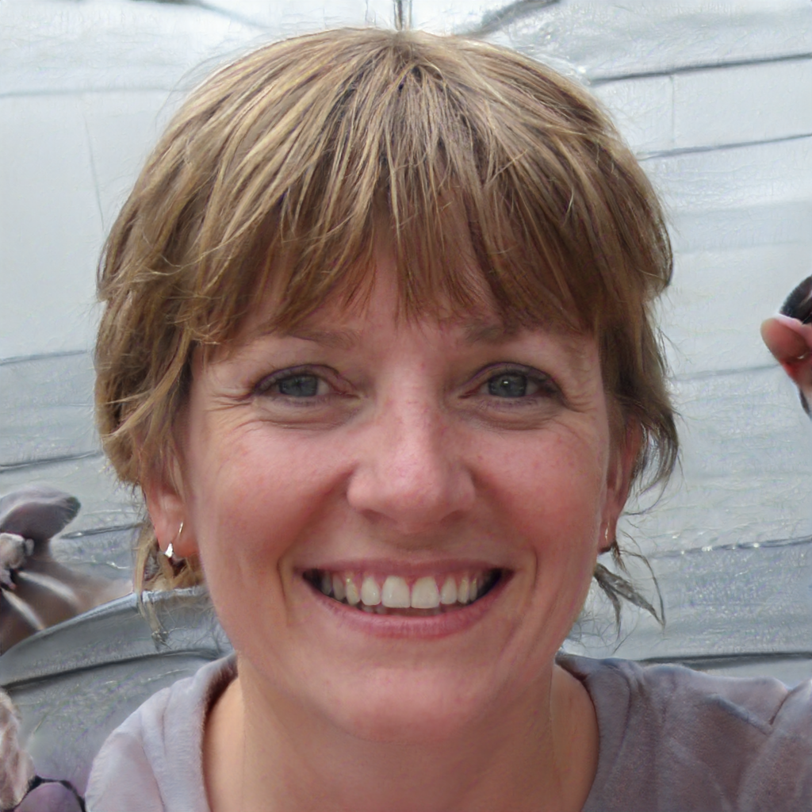

A New Perspective on Generative Adversarial Networks
Generative Adversarial Networks have been first introduced in 2014 in this paper. The samples generated in this paper using MNIST and Cifar-10 datasets were promising but clearly far from realistic.
Numerous reasearchers have worked on those models and have designed much more efficient architectures able to generate more realistic samples with a much better resolution. In this post, we detail the results obtained by state-of-the-art GANs trained on the following datasets: faces, cars, churches, horses and living rooms.
Those results are based on the two following papers by Karras et al.:
Progressive Growing GANs (here) for the living rooms GAN
We provide 30 images generated with the different models. Those images have not been cherry-picked, which explains why some do not look realistic. Though, it is impressing to see how those images are globally very good-looking.

Image interpolation
A very nice feature of GANs is that they provide a way to go from one generated image to an other through a continuous set of realistic images. For each model, we provide here interpolated images between two images picked randomly.
Next steps
GANs didn't bring many real-life applications since their creation in 2014. The main reason for this is that they are known to be very hard to train. Recent breakthroughs on GANs training and architecture design improved very significantly their performance.
As highlighted in this post, the state-of-the-art GANs enable to generate very realistic images. GANs can be applied to nearly every kind of data, from living rooms to faces or audio files, as long as they are trained on enough data (AJOUTER QQCHOSE SUR NOMBRE DE SAMPLES NECESSAIRES).
We think that those recent improvements will unlock many applications of GANs, in particular to help people working in creative professions with a new dimension.